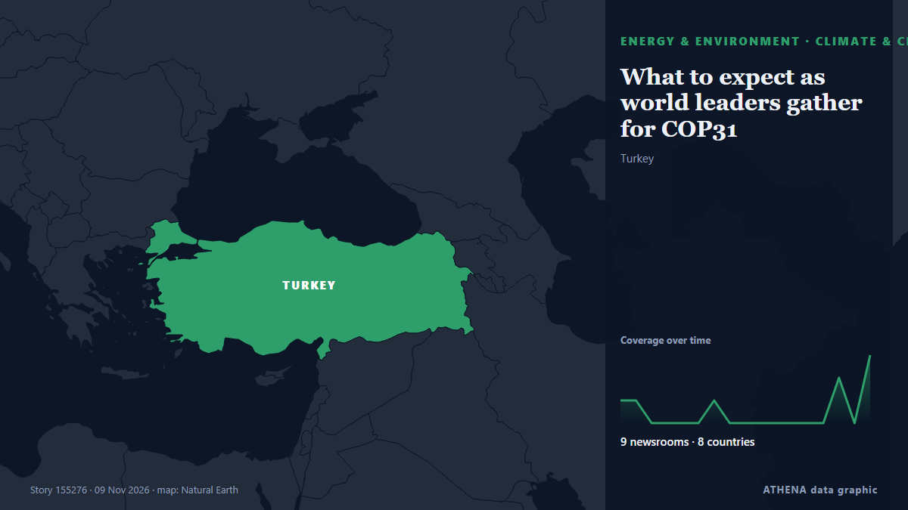

Ενέργεια, Πόροι & Περιβάλλον
ΧορηγούμενοΠαρουσιάζεται από  Cybernetics and Artificial Intelligence Lab Welcome to the Cybernetics and Artificial Intelligence Laboratory, established at the Department of Business Administration of the National and Kapodistrian University of Athens. The lab is headed by Professor Dimitrios Thomakos. The lab aims to do research that can be published in top venues. Our research uses tools and methods of Artificial Intelligence, and lies in the following areas: - Forecasting - Decision making - Cyber security - Finance We are always looking forward to collaborating with exceptional students!
Cybernetics and Artificial Intelligence Lab Welcome to the Cybernetics and Artificial Intelligence Laboratory, established at the Department of Business Administration of the National and Kapodistrian University of Athens. The lab is headed by Professor Dimitrios Thomakos. The lab aims to do research that can be published in top venues. Our research uses tools and methods of Artificial Intelligence, and lies in the following areas: - Forecasting - Decision making - Cyber security - Finance We are always looking forward to collaborating with exceptional students!
Οι τίτλοι των ειδήσεων παρουσιάζονται στα αγγλικά, όπως δημοσιεύτηκαν.

Κλίμα & κλιματική πολιτικήWhat to expect as world leaders gather for COP31
With few sweeping new commitments expected, negotiators will tackle unfinished business on climate finance, fossil fuels, and the future of the COP process. από Grist
| 27 Οκτ | 113 |
|---|---|
| 28 Οκτ | 89 |
| 29 Οκτ | 76 |
| 30 Οκτ | 94 |
| 31 Οκτ | 39 |
| 1 Νοε | 55 |
| 2 Νοε | 121 |
| 3 Νοε | 93 |
| 4 Νοε | 99 |
| 5 Νοε | 96 |
| 6 Νοε | 57 |
| 7 Νοε | 34 |
| 8 Νοε | 39 |
| 9 Νοε | 11 |
22 injured as magnitude 5.7 earthquake hits central Japan: What we know
An earthquake with a preliminary magnitude of 5.7 hit central Japan early Sunday, leaving over 20 people injured in Aichi and Shizuok. από Mainichi (English)
TotalEnergies supply 900,000 tons of LNG per year to Jiangsu Guoxin group for 15 years in China
TotalEnergies has signed an agreement with Jiangsu Guoxin Group, a major energy company in China Jiangsu Province, for the delivery. από Cyprus Shipping News
Moldova launches power line connecting it to Romania and stops buying Russian gas – photo
President Maia Sandu has announced the launch of the Vulcănești-Chișinău power line and confirmed that Moldova no longer buys Russian gas, with two more connections to Romania planned. από Ukrainska Pravda (English)
Oil steadies after Trump signals restraint on Iran, Hormuz risks persist
NEW DELHI/PERTH: Oil prices were steady on Monday after US President Donald Trump downplayed the likelihood of new strikes on Iran, though attacks on ships near the Strait of Hormuz kept supply… από Arab News
Crude prices fall from six-month highs; WTI stands at $101 per barrel, Brent costs $115
Oil prices experienced a decline of over 1% after hitting six-month peaks, primarily due to geopolitical unrest in Saudi Arabia. από Times of India
Delhi AQI crosses 400 on Diwali: Firecrackers push air quality into ‘severe’ zone as thick smog blankets city
Delhi AQI crosses 400 on Diwali: The air quality deteriorated while Stage III of the Graded Response Action Plan (GRAP) is in force across Delhi-NCR. από Livemint
Hyundai Motor's HTWO teams up with Air Liquide to expand hydrogen mobility in China
SEOUL, Nov. 9 (Yonhap) -- Hyundai Motor Group said Monday its hydrogen business ... από Yonhap (English)
Earthquake with 5.7 magnitude occurred in western Japan
The earthquake caused disruptions to rail services, including the Shinkansen high-speed trains, Kyodo reported. από TASS (English)
Vaca Muerta export terminal advances as Jumbo Offshore completes installation campaign
Jumbo Offshore has installed two PLEMs and delivered two CALM buoys for the Vaca Muerta Oil Sur export terminal offshore Argentina. από World Oil
Petrobras Advances Tupi Oil Field Redevelopment with FPSO Design Approval
Petrobras has secured Approval in Principle (AiP) from Lloyd's Register (LR) for the conceptual design of its proposed REVIT I TUPI floating production, storage and offloading (FPSO) unit… από Offshore Engineer
'Samples tested at 67 locations': DK Shivakumar on ethanol blending
Ethanol blending: Samples tested at 67 locations, says DKS. από Deccan Herald
Zaporizhzhia nuclear plant relying on generators again after losing external power supply
“The cause and location of the latest disconnection are not yet known,” the IAEA said. από The Straits Times
Palestinian FM calls for int'l action amid Gaza tent flooding
The calls come amid heavy rainfall, which has flooded around 70,000 tents over the weekend, and risks the spread of disease among the displaced in Gaza. από The New Arab
President Barzani Offers Condolences to Families of Two Erbil Flood Victims
President Masoud Barzani expresses sympathy following the deaths of two residents, including a five-year-old child, in heavy rainfall and flooding in Erbil. από Kurdistan24 (English)
Ecuador’s Role in Latin America Explained
Ecuador uses the US dollar, ships shrimp and bananas worldwide and fights gangs at home. από The Rio Times
Heavy Rain Floods 70,000 Displacement Tents Across Gaza
Thousands of families face worsening conditions as winter storms leave tents flooded and belongings destroyed. από News of Bahrain
Navy assists to put out fire at Galle fisheries harbour boatyard
The Sri Lanka Navy rushed a firefighting team from the Southern Naval Command to help extinguish a sudden fire at a boat maintenance yard in the Galle fisheries harbour this afternoon, 8 November… από The Island
Egypt Deepens Gas Cuts To Fertilizer Makers As Energy Squeeze Tightens
Misr Fertilizers Production Company said it had been told of the reduction, which follows an earlier 20% cut to gas supplies for fertilizer plants. από Business Standard
HC directs BIWTA to clear plastic waste from Buriganga banks
BIWTA reports removing around 300 tonnes of waste from the Islampur area, but the court seeks a full report on the clearance and measures to prevent further dumping. από The Business Standard (Bangladesh) (working feed)
Thick smoke at Tehran refinery caused by safety flaring, no fire reported
Thick smoke and flames observed at Tehran’s oil refinery were due to safety flaring, with no fire reported. από Arab News
Emergency power cuts introduced in Dnipro, Kyiv and five oblasts
Kyiv, Kharkiv, Sumy and Poltava oblasts and the cities of Kyiv and Dnipro are affected. από Ukrainska Pravda (English)
US Extends Puerto Rico Grid Emergency
The US Department of Energy renewed two emergency orders for Puerto Rico’s power system, in force from 8 November 2026 through 5 February 2027. από The Rio Times
Democrats planning flood of AI bills when they take control of Congress
Most US voters think Trump's administration and Congress are not taking the risks of AI seriously enough. από Express Tribune
Singapore to end N95 mask distribution on Saturday as haze abates
The Ministry of Health will deactivate both the Public Health Preparedness Clinic Scheme and the Haze Subsidy Scheme from Nov 12. από CNA (Channel NewsAsia)
Beloved husband and dad among this week's Bristol funeral notices
Our thoughts are with those who have lost a loved one. από Bristol Post
Wike projects 70,000 turnout for Tinubu’s Rivers rally
Fubara described the mobilisation as a joint effort that was already yielding positive results, assuring the delegation that the state would build on the groundwork ahead of the rally. από Channels TV
As COP31 comes to Turkey, satellites reveal a landfill methane problem
Turkey, the host for COP31, is the world’s fifth-biggest emitter of methane from solid waste. από The Straits Times
Israel’s Arab Joint List warns of worsening Gaza crisis as floods swamp 70,000 tents
Alliance urges attention to plight of displaced Palestinians facing fourth winter in tents. από Anadolu Agency (English)
The Great Pacific Garbage Patch May Be Changing The Color of The Ocean
There's a monster lurking in the middle of the North Pacific Ocean, neither kraken nor... από ScienceAlert
Expert explains why Ukraine is exporting electricity despite power outages
Power outages in Ukraine are currently being driven not by a shortage of generating capacity but by damage to electricity transmission infrastructure. από Ukrinform (English)
Average Oil Exports From Iraq Rose in October
Iraq's crude oil exports increased to about 3.5 million barrels per day (BPD) in October, with shipments through Turkey's Ceyhan port rising to about 400,000 bpd… από Maritime Professional
French research vessel Abeille Marengo set to sail for cable surveys
The French research vessel Abeille Marengo is set to sail from Heraklion to begin seabed surveys for the electricity cable between Greece and Cyprus. από Cyprus Mail
Paul Whitehouse to launch animated show for children with wife Mine Conkbayir
That’s Jokes will be available on CBBC and BBC iPlayer from next week. από Evening Standard (London)
Cyprus to UN: Turkish seabed surveys for gas pipeline violate sovereignty
Cyprus has informed the United Nations that Turkish research vessels are carrying out seabed surveys in its waters for a planned natural gas pipeline to the occupied north. από Cyprus Mail